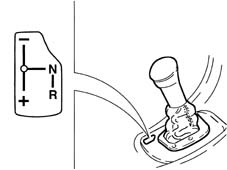
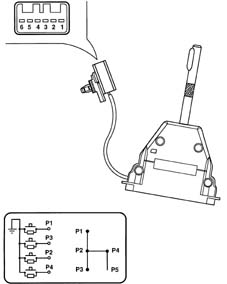
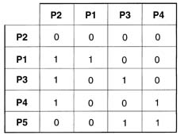
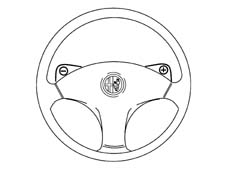
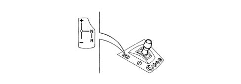
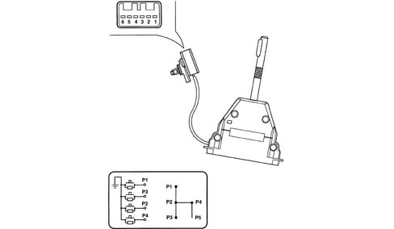
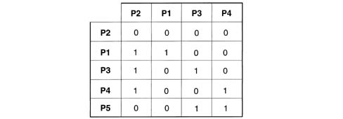
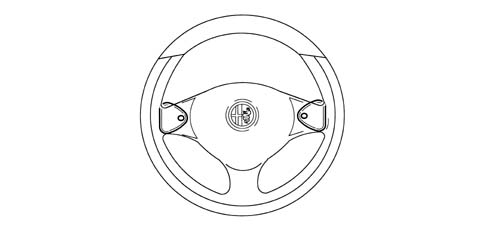

2127A hydraulic transmission external linkage
- Path
- Descriptions > 21 GEARBOX > 2127 ELECTRO-HYDRAULIC SELECTION. GEARBOX EXTERNAL. CONTROLS > 2127A hydraulic transmission external linkage
- Kind
- system description
- Applies to
- engines: 2.0 JTS, 3.2 V6, 2.0 JTS; all production periods
- Interactive page
- https://sloeber94.github.io/elrnDB-a156/en/#/3232902
Applies to: engines: 2.0 JTS, 2.0 JTS; all production periods; only with equipment: Smart gearbox
Speed selection lever
When in semiautomatic mode, gear changes are made using a floating control lever with a single stable central position.
To change gear, hold the brake pedal down and:
- push the lever forward (+) to change up;
- push the lever back (-) to change down.
To engage neutral (N), move the gear lever to the right with the car at a standstill and the brake pedal pressed.
Reverse (R) can be engaged from any speed and with the car at a standstill by pushing the lever to the right and back.

It is equipped with four normally open switches, each with two electrical resistances. One resistance is in parallel with the contact and the other is earthed.

1, Earth 2, Switch P1 3, Switch P3 4, Switch P2 5, Switch P4 6, Not connected
The various combinations for activation of switches P1-P2-P3-P4 are summarised in the following table.

Steering wheel with speed selection buttons
The steering wheel is fitted with two buttons on the spokes. With the car in motion, these buttons can be used to change up or down through the gears.
Use the left hand button (-) to change down and the right hand button (+) to change up.

Applies to: engines: 3.2 V6; all production periods; only with equipment: Smart gearbox
COMPONENT DESCRIPTION
GEAR SELECTION CONTROL LEVER
When in semiautomatic mode, gear changes are made using a floating control lever with a single stable central position.
To change gear, hold the brake pedal down and:
- push the lever forward (+) to change up;
- push the lever back (-) to change down.
To engage neutral (N), move the gear lever to the right with the car at a standstill and the brake pedal pressed.
Reverse (R) can be engaged from any speed and with the car at a standstill by pushing the lever to the right and back.

It is equipped with four normally open switches, each with two electrical resistances. One resistance is in parallel with the contact and the other is earthed.

The various combinations for activation of switches P1-P2-P3-P4 are summarised in the following table.

STEERING WHEEL WITH SPEED SELECTION LEVERS
There are two levers on the steering wheel, under the spokes, through which, when the car is moving, the driver can change up or down a gear.
Use the left hand button (-) to change down and the right hand button (+) to change up.
